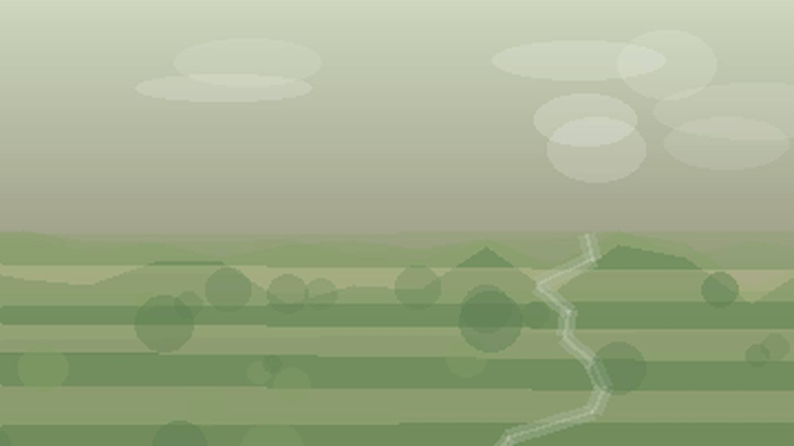

Главная / Республика Марий Эл

Республика Марий Эл
Что посадить
Что посадить
в Республике Марий Эл
Выберите природную зону в Республике Марий Эл: условия внутри региона различаются по теплу, влаге, ветру и длине сезона.
западная зона: лесостепные условия дают хороший баланс для овощей, ягодников и плодового сада. Ориентиры внутри зоны: Козьмодемьянск.
Открыть страницу зоны → центральная зонацентральная зона: лесостепные условия дают хороший баланс для овощей, ягодников и плодового сада. Ориентиры внутри зоны: Йошкар-Ола, Волжск.
Открыть страницу зоны → восточная лесная зонавосточная лесная зона: лесостепные условия дают хороший баланс для овощей, ягодников и плодового сада. Ориентиры внутри зоны: Звенигово, Морки.
Открыть страницу зоны →